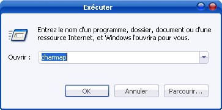
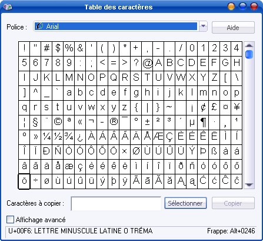
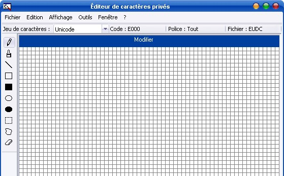
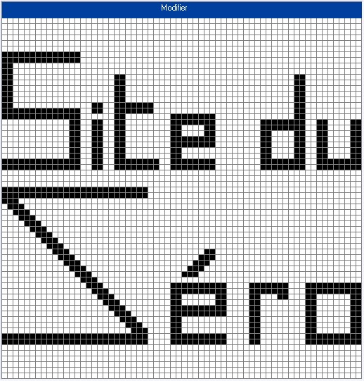
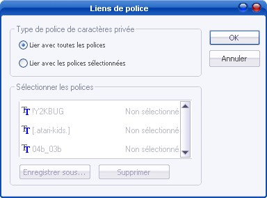
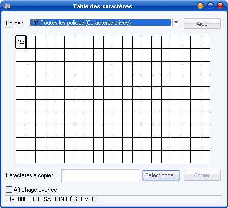
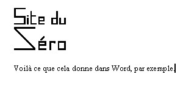

Dans ce tutoriel sans prétention, je vais vous apprendre à créer vos propres caractères spéciaux grâce à un outil que l'on peut trouver dans les entrailles de Windows XP. La manipulation est très aisée et à portée de main de tous. :)
Première question qui, je suppose, vient à l'esprit de quelques-uns :
Mais qu'est-ce que sont les caractères spéciaux ?
Eh bien, c'est très simple. Il s'agit de caractères qui, au même titre que les lettres et les chiffres, peuvent se trouver dans un texte. Seulement, ceux-ci sont spéciaux, c'est-à-dire qu'ils ne sont pas souvent utilisés et donc, pour la grande majorité, absents de votre clavier.
Pour vous donner une idée, en voici quelques-uns, choisis par mes soins :) :
Parler de caractères spéciaux, c'est bien ; les obtenir, c'est mieux ! Pour ce faire, il existe deux méthodes toutes simples.
Combinaisons de nombres avec Alt
La méthode la plus pratique pour écrire des caractères spéciaux consiste en une combinaison de touches alliant la touche Alt et un nombre. Pour cela, il faut laisser la touche Alt enfoncée et taper (avec le clavier numérique) un certain nombre.
Exemples :
la combinaison Alt + 0192 donne À
;
La combinaison Alt + 0201 donne É
;
La combinaison Alt + 0199 donne Ç
;
La combinaison Alt + 0149 donne •, une puce très utilisée.
Bien sûr, vous ne pouvez pas connaître toutes ces combinaisons, c'est pourquoi je vous donne l'adresse de ce site qui en regroupe la grande majorité.
Le copier-coller
On a donc vu que la méthode précédente pose certains problèmes. Pour y remédier, vous pouvez copier-coller les caractères spéciaux à partir de Windows XP vers votre rédaction. Pour accéder à la table des caractères spéciaux de Windows XP, il existe deux solutions :
rendez-vous dans le menu démarrer puis Tous les programmes > Accessoires > Outils système > Table des caractères ;

saisissez charmap dans la boîte de commande Exécuter... du menu démarrer, puis cliquez sur OK.
Dans les deux cas, vous arrivez à la Table de caractères qui se présente comme ceci :

Pour obtenir un caractère, cliquez dessus. Il va alors se retrouver dans le champ du bas et vous pouvez alors le copier puis le coller comme bon vous semble. ;) J'espère que vous avez remarqué qu'en haut de la Table des caractères, vous pouvez sélectionner la police qui vous convient (ici, Arial).
Vous savez désormais en quoi consiste les caractères spéciaux, et comment en insérer dans votre texte. La prochaine partie va vous permettre de créer vos propres caractères. :D
C'est ici que vous allez pouvoir donner une touche personnelle à ces caractères spéciaux. En effet, peu d'utilisateurs le savent, mais Windows XP recèle un Éditeur de caractères privés (c'est comme ça qu'il s'appelle). Pour l'atteindre, rendez-vous dans la boîte de dialogue Exécuter... et saisissez la commande eudcedit.
S'ouvre alors une boîte de dialogue intitulée Sélectionner le code. Laissez E000 (par défaut) et cliquez sur OK.
Ça y est, vous êtes dans l'Éditeur de caractères privés de Windows XP :

Sur la gauche, sont présents quelques outils destinés à réaliser votre caractère. De haut en bas :
pinceau : remplit les cases une à une ;
brosse : remplit les cases deux à deux ;
ligne droite : trace une ligne dans n'importe quelle direction ;
rectangle vide : trace le contour d'un rectangle ;
rectangle plein : trace un rectangle noir ;
ellipse vide : trace le contour d'une ellipse ;
Ellipse pleine : trace une ellipse noire ;
section rectangulaire : crée une section rectangulaire afin de redimensionner une figure ;
section de forme libre : crée une section de forme libre afin de redimensionner une figure ;
gomme : vide la case de son contenu (noir) ;
Pour ce tuto, j'ai décidé de créer un caractère spécial estampillé Site du Zér0. :) Voici ce que ça donne dans l'éditeur :

Au fur et à mesure que vous avancez, pensez à enregistrer le caractère grâce à la commande Ctrl + S.

Une fois que vous avez fini, il vous faut enregistrer le caractère au sein des polices d'écriture. Pour cela, dans l'Éditeur de caractères privés, faites Fichier > Liens de police... et choisissez Lier avec toutes les polices puis OK.
Maintenant que votre caractère spécial est enregistré, je suis sûr que vous allez vouloir l'utiliser dans un texte. ;) Rendez-vous dans la Table des caractères et comme Police, sélectionnez Toutes les polices (Caractères privés) :

Comme je vous l'ai appris précédemment, copiez votre caractère jusqu'à un éditeur de texte (j'ai choisi Word). Collez-le mais bien évidemment, il est tout petit. Comme taille de police, choisissez quelque chose de très gros (dans mon exemple, 72). Cela me donne :

Et voilà, vous savez réaliser des caractères qui vous ressemblent. Vous allez pouvoir épater vos amis avec de jolis textes personnels. ;)